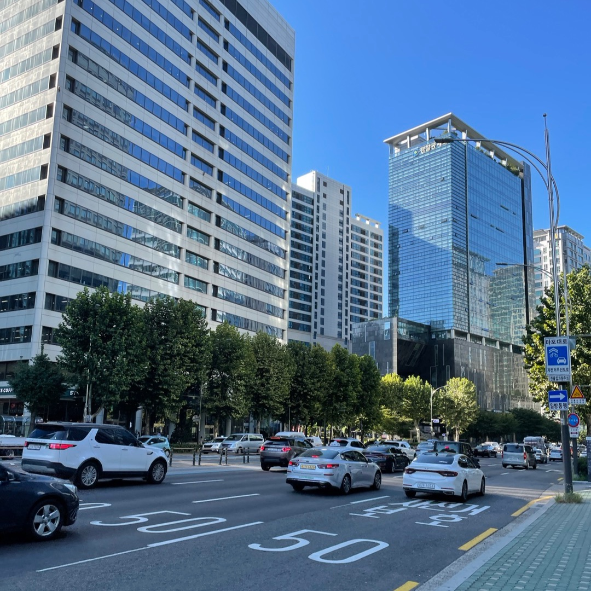
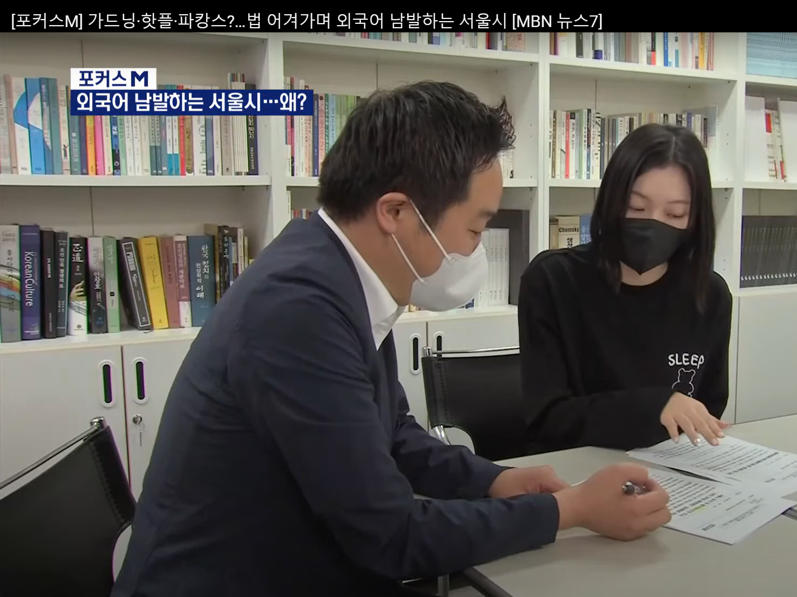

글을 쓰고, 코드도 씁니다.
성찰하고 기록하는 삶을 중요하게 생각합니다.
인간 언어로 설계한 논리를 컴퓨터 언어로 번역합니다.


 |
NaSeoYeong_ 💜 '문사철'을 사랑한 데이터분석가 국어국문, 철학 전공 Email. syn43018@naver.com |


글을 쓰고, 코드도 씁니다.성찰하고 기록하는 삶을 중요하게 생각합니다. |
📊 독특한 이력의 데이터분석가
|
 |
📋 K-DT / 빅데이터분석가 과정을 수강하는 이유?
데이터 구축과 처리의 어려움, 일선에서 느끼다. 😭
|  |
3,800여 개의 수집 대상 외국어를 기준으로,
|
🔧 사용하는 툴과 관심 분야
|
|
|
📚 보유한 자격증과 포트폴리오
|
|